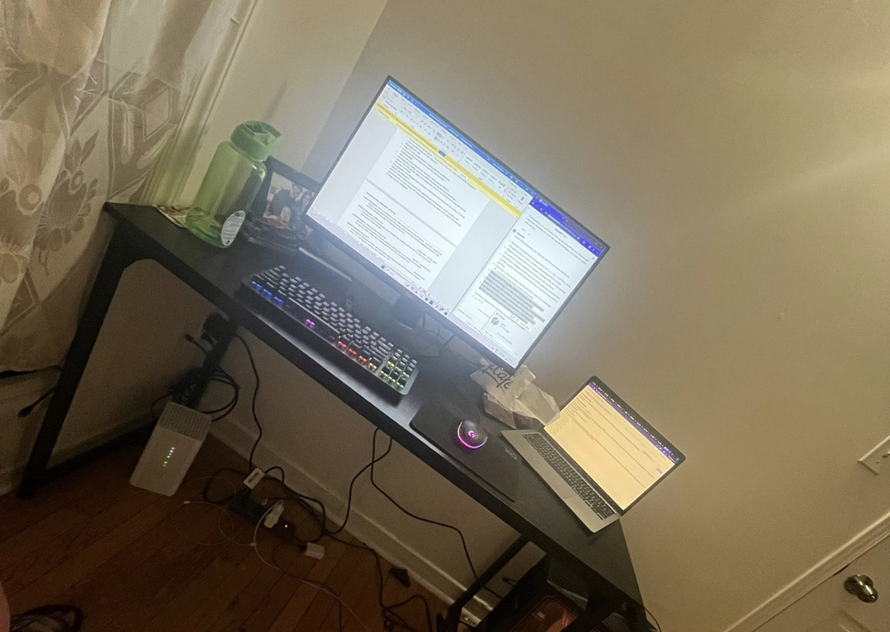
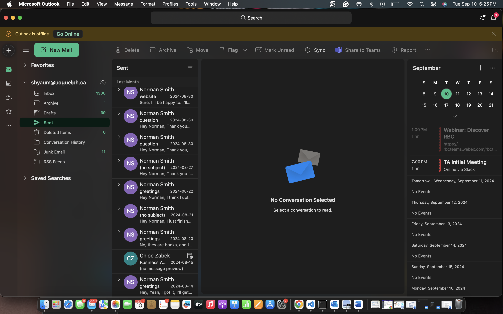

My Co-op Experience (Summer 2024)
This section highlights my journey as a Webmaster at the University of Guelph's History Department. Below, I outline the challenges faced, the responsibilities taken, and the learning experiences gained.
Abstract/Introduction
Through this website, I aim to provide a glimpse into my journey as a co-op student and the skills I developed along the way. This website is both a reflection of my technical growth and a platform to showcase my collaborative and problem-solving abilities.
Information about the Employer
The University of Guelph's History Department is a hub of research and academic collaboration. It plays a key role in historical studies and public engagement, offering a wealth of knowledge in fields such as Canadian history, Indigenous studies, and social history. As part of my role, I maintained and enhanced the department's online presence, working with a talented group of academics and staff.
Overview of My Work Term
During my co-op term, I was immersed in the day-to-day maintenance and expansion of the History Department's website. From improving accessibility to collaborating on historical projects, my role was multifaceted, requiring both technical skills and creative problem-solving. This was the site I worked on: manchurialiteratureculture.
Goals
- Enhance the website's user interface to make it more engaging.
- Improve accessibility features for a wider audience, including those with disabilities.
- Collaborate with faculty to update and expand the content library.
Key Responsibilities & Tasks
- Maintained website content with HTML, CSS, and JavaScript.
- Created an interactive timeline on the department’s historical research.
- Worked with faculty to ensure the website met modern accessibility standards.
Interactive timeline project for showcasing research.
Challenges Faced
- Getting familiar with the new content management system (CMS).
- Managing tight deadlines while balancing multiple responsibilities.
- Working remotely with faculty and communicating across time zones.
One particular challenge was learning a new CMS system, but with perseverance and guidance from my team, I soon became comfortable managing content. Managing remote collaborations also required efficient communication and planning to align with the faculty's research needs.
Skills Gained
- Proficiency in HTML, CSS, and Bootstrap for front-end web development.
- Gained experience with CMS platforms and their inner workings.
- Enhanced project management skills in collaborative environments.
Learning Outcomes
Through this experience, I not only honed my technical skills but also developed crucial soft skills, such as effective communication and time management. Working closely with historians gave me a unique perspective on how digital platforms can be used to communicate complex ideas in engaging ways.
Collaborating remotely with faculty through tons of emails throughout my work term
Conclusion
In summary, this co-op experience helped me develop essential skills in both web development and team collaboration. If you were to describe the contents of this website, I would hope it reflects a journey of growth, technical mastery, and an appreciation for historical research. Moving forward, I look to add more co-op experiences that will further enhance my expertise.
Acknowledgments
I would like to thank my supervisor, Norman Smith, and the entire History Department for their support and guidance throughout my work term. Their trust in me allowed me to grow both personally and professionally.